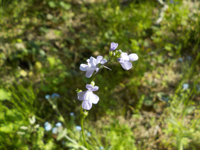
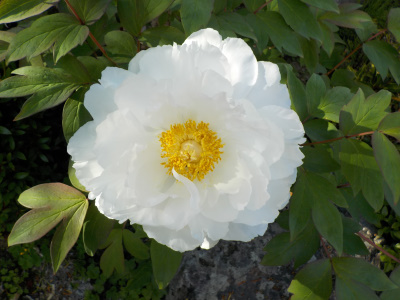
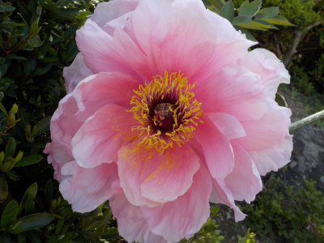
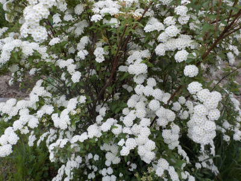
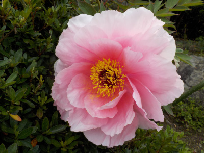
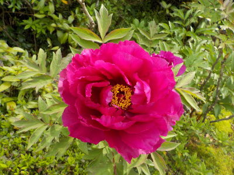
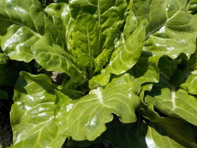
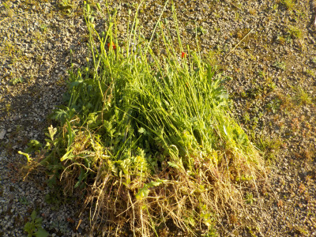
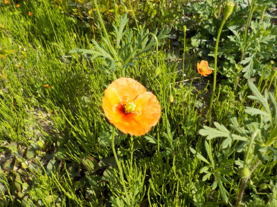
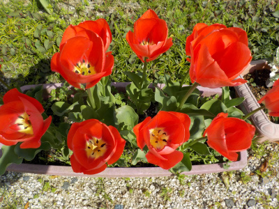

遊びで植物を育てよう
2022/04/24
マツバウンランは放置でもいいかな。

毎年キレイだからと無視していたマツバウンランは今が見頃です。
外来種みたいですが生態系に影響があるって記事を見なかったです。
これよりもスギナをなんとかしたいな。
【4月TOP】
【日記TOP】
【園芸TOP】
2022/04/24
昨日ツボミだった白いボタンが咲きました。

まだ咲かないだろうと昨日見て思ったんですが、今日咲いていました。
咲きたてです。

昨日キレイだったピンクはちょっと萎れました。花粉が花びらに沢山付いています。
【4月TOP】
【日記TOP】
【園芸TOP】
2022/04/23
コデマリが賑やかです。

これだけ沢山花が咲いたら実が沢山出来て、タネも沢山落ちで大繁殖しそうですが、そんなことにはなっていないです。
【4月TOP】
【日記TOP】
【園芸TOP】
2022/04/23
ボタンが咲きました。

開花が見れて良かった。

休日と開花日が合わないと綺麗なボタンは見れないです。
【4月TOP】
【日記TOP】
【園芸TOP】
2022/04/17
ビタミン菜ってあんまり好きな名前じゃないな。

名前からして栄養がありそうですが「栄養があるから不味くても食べなさい」的な感じがして、食べる気がちょっとなくなる。
ビタミンが多いかもしれないけど、そのビタミンは体に吸収されるのかな？
【4月TOP】
【日記TOP】
【園芸TOP】
2022/04/16
ナガミヒナゲシはとっても抜きやすい。

邪魔物だって思ったら急に抜きたくなりました。
他の草は抜かないで、ナガミヒナゲシだけを集中して抜きました。
茎を引っ張っぱるだけで根っこまで取れるので、作業は簡単で、ちょょっとの時間で沢山抜けました。
【4月TOP】
【日記TOP】
【園芸TOP】
2022/04/10
小さいポピーはキレイだから抜かずにいました。

野生化したポピーが勝手に生えていると思っていたんですが、繁殖力の強い外来種でナガミヒナゲシって植物だそうです。
生態系に影響を及ぼす恐れがあるため、無い方がいいらしい。
でも雑草を取るのは面倒。
【4月TOP】
【日記TOP】
【園芸TOP】
2022/04/02
チューリップの季節ですね。

普通の赤いチューリップです。
派手で目立ちますね。普通ですけど。
【4月TOP】
【日記TOP】
【園芸TOP】
過去の日記
【2024年4月の日記】
【2023年4月の日記】
【2022年4月の日記】
【2021年4月の日記】
【2020年4月の日記】
【2019年4月の日記】
【2018年4月の日記】
【2017年4月の日記】
【2016年4月の日記】
【2015年4月の日記】
【2014年4月の日記】
【2013年4月の日記】
【4月TOP】
【日記TOP】
【園芸TOP】
畑仕事じゃないよ。
【おいしいものを食べよう。】【たくさん寝よう。】
【ソロ活をしよう!】【季節感のあることをしよう。】【動画視聴はほどほどに。】【当サイトの全てのコンテンツは無断転載禁止です。】